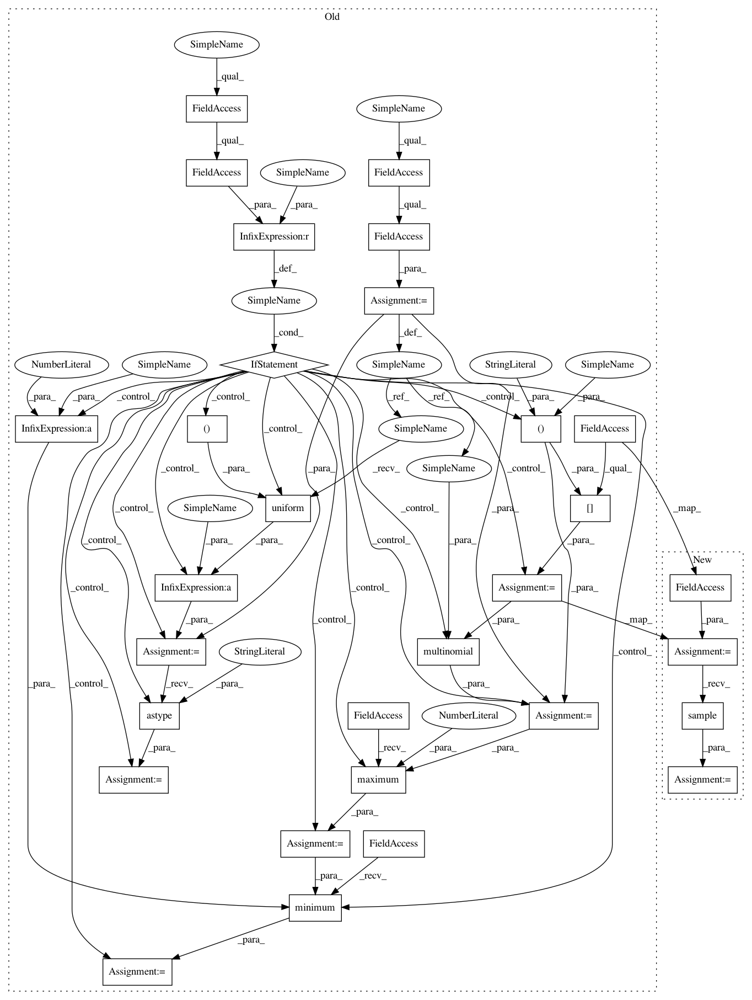

8ec91c97eb64bbe3e5030248b08d3870a5b4cb60,theanolm/network/samplingoutputlayer.py,SamplingOutputLayer,_get_seqshared_sample_tensors,#SamplingOutputLayer#Any#,149
Before Change
num_samples = self._network.num_noise_samples
num_batch_samples = num_time_steps * num_samples
num_classes = numpy.int64(self._network.vocabulary.num_classes())
random = self._network.random
if self._network.noise_probs is None:
// The upper bound is exclusive, so this always creates samples that
// are < num_classes.
sample = random.uniform((num_batch_samples,)) * num_classes
sample = sample.astype("int64")
else:
class_probs = self._network.noise_probs[None, :]
// We could repeat the distribution for each time step, and sample k
// noise words per time step. Since k < number of outputs, we would
// never have a problem with sampling without replacement.
// Unfortunately that is very inefficient.
sample = multinomial(random, class_probs, num_batch_samples)
sample.reshape([num_time_steps, num_samples])
// For some reason (maybe a rounding error) it may happen that the
// sample contains a very high or negative value.
sample = tensor.maximum(sample, 0)
sample = tensor.minimum(sample, num_classes - 1)
sample = sample.reshape([num_time_steps, num_samples])
return sample, self._get_target_seq_preact(layer_input, sample)
def _get_shared_sample_tensors(self, layer_input):
After Change
num_samples = self._network.num_noise_samples
num_batch_samples = num_time_steps * num_samples
num_classes = numpy.int64(self._network.vocabulary.num_classes())
noise_sampler = self._network.noise_sampler
// Sampling k noise words per time step is inefficient with multinomial.
sample = noise_sampler.sample(1, num_batch_samples)
sample = sample.reshape([num_time_steps, num_samples])
return sample, self._get_target_seq_preact(layer_input, sample)
def _get_shared_sample_tensors(self, layer_input):
In pattern: SUPERPATTERN
Frequency: 3
Non-data size: 30
Instances
Project Name: senarvi/theanolm
Commit Name: 8ec91c97eb64bbe3e5030248b08d3870a5b4cb60
Time: 2017-08-01
Author: seppo.git@marjaniemi.com
File Name: theanolm/network/samplingoutputlayer.py
Class Name: SamplingOutputLayer
Method Name: _get_seqshared_sample_tensors
Project Name: senarvi/theanolm
Commit Name: 8ec91c97eb64bbe3e5030248b08d3870a5b4cb60
Time: 2017-08-01
Author: seppo.git@marjaniemi.com
File Name: theanolm/network/samplingoutputlayer.py
Class Name: SamplingOutputLayer
Method Name: _get_shared_sample_tensors
Project Name: senarvi/theanolm
Commit Name: 8ec91c97eb64bbe3e5030248b08d3870a5b4cb60
Time: 2017-08-01
Author: seppo.git@marjaniemi.com
File Name: theanolm/network/samplingoutputlayer.py
Class Name: SamplingOutputLayer
Method Name: _get_sample_tensors
Project Name: senarvi/theanolm
Commit Name: 8ec91c97eb64bbe3e5030248b08d3870a5b4cb60
Time: 2017-08-01
Author: seppo.git@marjaniemi.com
File Name: theanolm/network/samplingoutputlayer.py
Class Name: SamplingOutputLayer
Method Name: _get_seqshared_sample_tensors